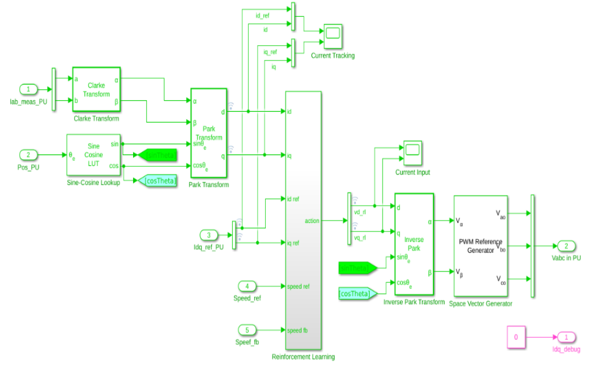
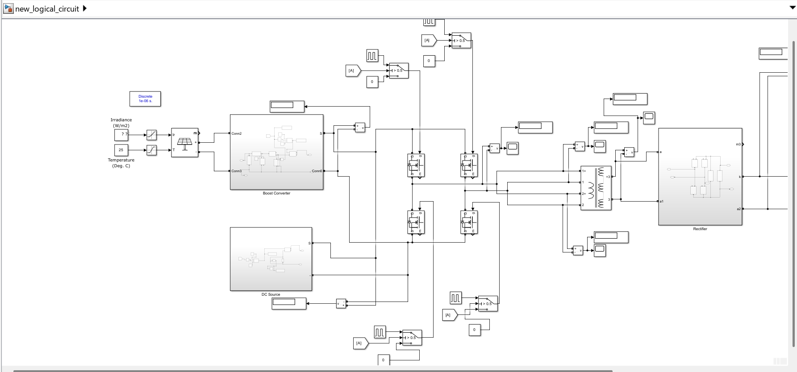
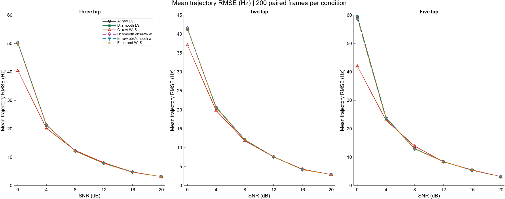
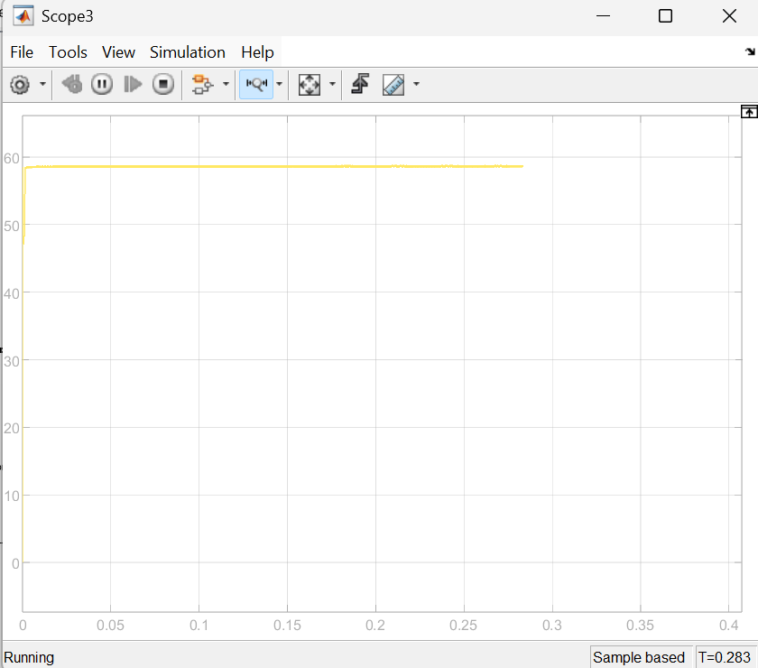
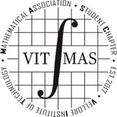
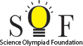

CURRENT UNIVERSITY · MASTER’S STUDENT
The University of Osaka 大阪大学
Electrical, Electronic and Infocommunications Engineering
October 2025–September 2027 (expected)Current GPA3.71/ 4.00
OSAKA, JAPAN · ENGINEERING PORTFOLIO
I’m Somesh Mridha, a master’s student at The University of Osaka. I use modelling, simulation, and careful experiments to understand and improve engineering systems.
Master’s student · The University of Osaka | B.Tech graduate · VIT Vellore
Wireless communications. Intelligent control. Energy systems.
A closer look at my
research practice
ACADEMIC FOUNDATION
CURRENT UNIVERSITY · MASTER’S STUDENT
Electrical, Electronic and Infocommunications Engineering
October 2025–September 2027 (expected)PREVIOUS UNIVERSITY · BACHELOR’S COMPLETED
Electrical and Electronics Engineering
2021–2025 · Vellore, IndiaMy admission to Osaka was featured in VIT’s School of Electrical Engineering newsletter. Read the university newsletter ↗
01 / SELECTED WORK
Understand the system. Build a model. Test the assumptions.
Investigating low-complexity Doppler estimation and compensation for OFDM-based LEO satellite communications at The University of Osaka.
Receiver simulation, estimator implementation, controlled comparisons, and statistical evaluation.
Synthetic-channel simulations. Gains are localized at 0 dB; a consistent BER advantage has not been established.

Original project figure
Original project figureA LOOK INSIDE THE WORK
Original figures from my project reports and research exports. Open a case study for the method, results, and limitations.


02 / HOW I WORK
A result matters when you can explain how you reached it—and where it stops being reliable.
Define the system, the question, and a measurable baseline.
Translate physical behaviour into a simulation with explicit assumptions.
Compare alternatives under matched conditions. Investigate unexpected results.
Document the evidence, limitations, and next decision clearly.
03 / THE ENGINEER BEHIND THE WORK
My path connects electrical engineering with communication systems—and a growing interest in how intelligent methods can improve both.
From motor feedback loops and wireless power to satellite receivers, I enjoy breaking complex systems into parts I can model, test, and explain. I’m building that practice through my master’s research in Osaka.
MATLAB · Simulink · Python
Digital signal processing · Monte Carlo simulation · Least squares · Controller evaluation · Model validation
English: fluent · Japanese: basic (N5 level)

LEADERSHIPVIT Mathematical Association
Led design work, created event media, and organised the Dez-O-Quest designathon.
EARLIER ACHIEVEMENTS

First place · Interschool competition
State-level finalist
CONTINUING TO LEARN
Selected courses and leadership activities shared on my LinkedIn profile.
04 / WHAT’S NEXT
Interested in engineering opportunities in Japan, especially wireless communications, simulation, control, and energy systems.